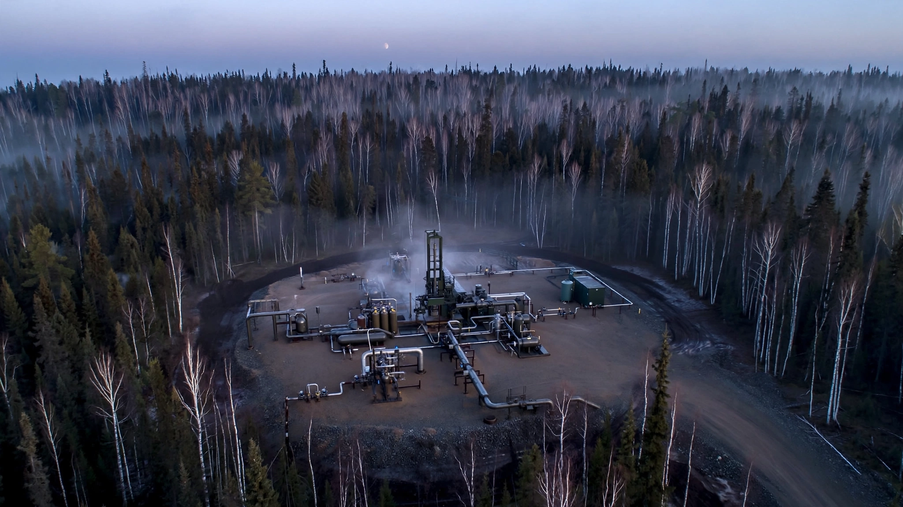

⚡ Energy
Three Federal Labs Just Confirmed Minnesota Has What Everyone Planned to Mine From the Moon
Pulsar Helium's Topaz well flows helium-3 at concentrations matching lunar regolith, verified by three government laboratories. At $18 million per kilogram, it is the most valuable isotope flowing from any well on Earth, and quantum computing cannot scale without it. Unlike the Moon, Minnesota has roads.

Eighteen million dollars per kilogram. That is what helium-3 costs on the open market, making it roughly 100,000 times more expensive than the helium that fills birthday balloons and perhaps the most valuable naturally occurring substance traded anywhere on Earth. Until last October, essentially all of it came from one source: the radioactive decay of tritium in nuclear weapons stockpiles managed by the U.S. and Russian governments, a process that maxes out at 22,000 to 30,000 liters per year worldwide, which works out to roughly three to four kilograms total, not tons.
Now a well in northeastern Minnesota is flowing it out of the ground as a free byproduct of helium production.
On January 19, 2026, Pulsar Helium announced that two U.S. federal laboratories had independently verified helium-3 concentrations in gas from its Jetstream #1 appraisal well at the Topaz project. The U.S. Geological Survey's Noble Gas Laboratory in Denver and Lawrence Livermore National Laboratory in California both confirmed the results, matching earlier analysis by the Woods Hole Oceanographic Institution. Three separate labs, analyzing aliquots from a single sealed copper tube sample collected by WHOI's Dr. Peter Barry on December 10, 2025, arrived at essentially identical numbers: 11.2 to 11.9 parts per billion of helium-3 in the gas stream, associated with 7.7 to 8.0% helium-4 by volume.
For context, commercial helium production becomes economic at around 0.3% helium concentration. Topaz runs at 7 to 8%. And that ³He concentration of roughly 12 parts per billion? It ranks among the highest naturally occurring helium-3 levels ever recorded in a terrestrial reservoir. Earlier samples from the same well measured up to 14.5 ppb, a figure that sits squarely within the range estimated for lunar regolith: 1.4 to 15 parts per billion, according to NASA's technical reports.
Minnesota, it turns out, has Moon-grade helium-3, 5,100 feet underground instead of 238,900 miles overhead, accessible by truck rather than by rocket, and confirmed by three independent laboratories using sealed copper tube samples analyzed through noble gas mass spectrometry protocols that left no room for contamination artifacts.
Why Quantum Computing Cares
Helium-3 matters because quantum computers cannot function without extreme cold, and there is currently no commercial alternative to the cooling mechanism that requires it. Qubits lose coherence above roughly 15 millikelvins, a temperature achieved by dilution refrigerators that circulate a mixture of helium-3 and helium-4. Bluefors, the Finnish company that dominates this market, has shipped more than 1,500 dilution refrigerators worldwide and uses helium-3 in every single one.
Current machines need a few dozen liters each, which is manageable given existing supply. What is not manageable is the trajectory ahead. A practically useful quantum computer will require millions of qubits, and cooling a chip that large could demand tens of thousands of liters of helium-3 per machine, according to Bluefors CEO Rob Gunnarsson, meaning a single scaled quantum data center could drain the entire U.S. national stockpile of roughly 90,000 liters. Christopher Landers, director of the DOE's Isotope Program, put it bluntly: "If that demand hits, this is serious."
The Math Nobody Has Run
Pulsar has not published production projections for helium-3, but the company has released enough raw data to build a credible estimate from first principles, and the numbers that fall out reshape how you think about the economics of every competing source.
Jetstream #1, under wellhead compression, peaked at 1.3 million cubic feet per day of gas. That converts to approximately 36,800 cubic meters at standard temperature and pressure. At 12 parts per billion by volume, the helium-3 content works out to roughly 0.44 liters per day, or about 161 liters per year from a single well.
That sounds small until you compare it to existing supply. It is not.
Global helium-3 production from tritium decay runs 22,000 to 30,000 liters annually, meaning one Topaz well would add 0.5 to 0.7% to the entire world supply of the most expensive isotope on Earth. Pulsar's Timberline Drilling contract covers up to ten wells. If all ten perform at Jetstream #1 levels, Topaz produces roughly 1,610 liters per year, boosting global supply by 5 to 7%, a number large enough to alter pricing dynamics in a market where even minor disruptions send buyers scrambling.
At $2,500 per liter, that is $4 million per year in helium-3 alone. But the economics get extraordinary when you realize helium-3 is not the primary product. Helium-4, flowing at 8% of that 1.3 million cubic feet per day, generates the actual revenue. At current contract prices of $500 to $600 per thousand cubic feet (per a recent Renergen offtake agreement), Jetstream #1's helium-4 output alone is worth roughly $20.9 million per year. The helium-3 is a byproduct, pure upside, its marginal extraction cost approaching zero because the carrier gas was going to be produced regardless of whether anyone bothered to separate the rare isotope riding along inside it.
| Source | Cost per Liter | Annual Capacity | Status |
|---|---|---|---|
| Tritium decay (weapons stockpiles) | ~$2,500 | 22,000–30,000 L | Current, geopolitically constrained |
| Topaz (Pulsar, 10-well scenario) | Near-zero marginal | ~1,610 L (est.) | Appraisal phase; Chart Industries designing production |
| Lunar regolith (Interlune) | ~$3,000 implied | Up to 10,000 L (contracted) | First test mission planned 2027; commercial delivery 2030 |
Consider what each source demands. Tritium decay requires maintaining nuclear weapons and waiting for radioactive half-lives. Interlune's lunar mining requires a rocket to the Moon costing $100 million per launch at minimum, autonomous excavators processing thousands of tons of regolith in one-sixth Earth gravity, hermetic gas storage, and a return vehicle to bring the haul home. Interlune has signed a $300 million deal with Bluefors for up to 10,000 liters per year from 2028 to 2037. That implies a delivered cost around $3,000 per liter before accounting for capital expenditure on lunar infrastructure.
Topaz requires a gas well, a compressor, and an isotope separation system attached to a helium liquefaction plant that Chart Industries is already designing, all accessible via existing roads a 40-minute drive from Virginia, Minnesota, with no rockets, no regolith, and no return missions required.
What It Cannot Do
Topaz is a bridge, not a solution, and anyone who tells you otherwise hasn't looked at the demand curve. At 1,610 liters per year from ten wells, it adds meaningful supply to today's market but cannot close the gap that quantum computing will eventually open. Bluefors' Gunnarsson estimates a single future million-qubit machine could consume tens of thousands of liters. If the industry builds a thousand such machines, demand reaches tens of millions of liters annually. The Moon holds an estimated 1.1 million metric tons of helium-3 embedded in its regolith, roughly a billion kilograms compared to Earth's entire estimated reserve of 1.6 tons. For truly scaled quantum computing, the arithmetic eventually requires either lunar supply or a fundamental redesign of how quantum computers get cold.
That redesign is already underway. In January, DARPA issued a request for proposals seeking cryocooling systems that use no helium-3 at all, citing "dramatic transformative potential in both defense and commercial domains." At Aalto University in Finland, two research groups are pursuing on-chip electronic cooling that would bypass dilution refrigerators entirely. If any of these alternatives reach commercial viability, the helium-3 supply question becomes academic. Both Topaz and the Moon lose their strategic premium overnight.
Pulsar itself carries risk. It is a junior exploration company with a market capitalization around $248 million and no revenue. The triple-lab verification is scientifically rigorous, but converting ppb-level isotope concentrations into a commercially separated product requires technology that has not yet been deployed at this site. No resource estimate has been filed. No production timeline has been announced. Chart Industries is modeling production scenarios, not building plants, and no timeline exists for when helium-3 molecules from Topaz will actually reach a customer.
What You Can Do With This
If you work in quantum computing supply chain: Watch Pulsar's next milestone. The company is pursuing U.S. government partnerships and offtake agreements. Isotope separation from a natural gas stream at ppb concentrations is a solved problem in nuclear physics but has never been applied commercially at a helium production facility. Whoever cracks that integration first owns a pricing advantage over every other helium-3 source on Earth.
If you track critical materials policy: Helium-3 is not on the USGS critical minerals list, despite being rarer and more strategically important than several materials that are. The DOE Isotope Program is the de facto allocator. This discovery may force a policy conversation that hasn't happened since the 2010 shortage crisis.
If you invest in quantum infrastructure: The Interlune-Bluefors deal priced helium-3 at roughly $3,000 per liter, a 20% premium to current market. A terrestrial byproduct source with near-zero marginal cost fundamentally changes the pricing floor for any contract signed after Topaz enters production. Factor that into your models.
Bottom Line
Three of the most respected analytical laboratories in the United States independently confirmed that a gas well in northern Minnesota contains helium-3 at concentrations matching the lunar surface. While Interlune builds robots to mine the Moon and DARPA funds alternatives that skip helium-3 entirely, a company with ten drilling permits and a contract with Chart Industries is sitting on the only naturally occurring, continuously flowing source of the quantum computing industry's most critical input. At 161 liters per year per well, Topaz will not single-handedly power the quantum era. But at near-zero marginal cost per liter, it has already rendered the economics of every competing source obsolete for the next decade of actual, buildable quantum machines. The most expensive isotope on Earth turns out to be cheapest when it comes as a gift, riding along in a gas stream someone was going to produce anyway.